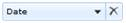
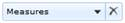

The Split Button highlights the elements in Axis Element Builder. Whenever we drag and drop an element into the Axis Element Builder, it shows the element as a Split Button with its name on it as shown below.

Figure 23: Split Button – Dimension

Figure 24:Split Button - Measure
When we drag and drop a measure, the Axis element builder will create a split button only for the first measure. The next time onwards, it will maintain the same single split button to hold the entire measure collection.